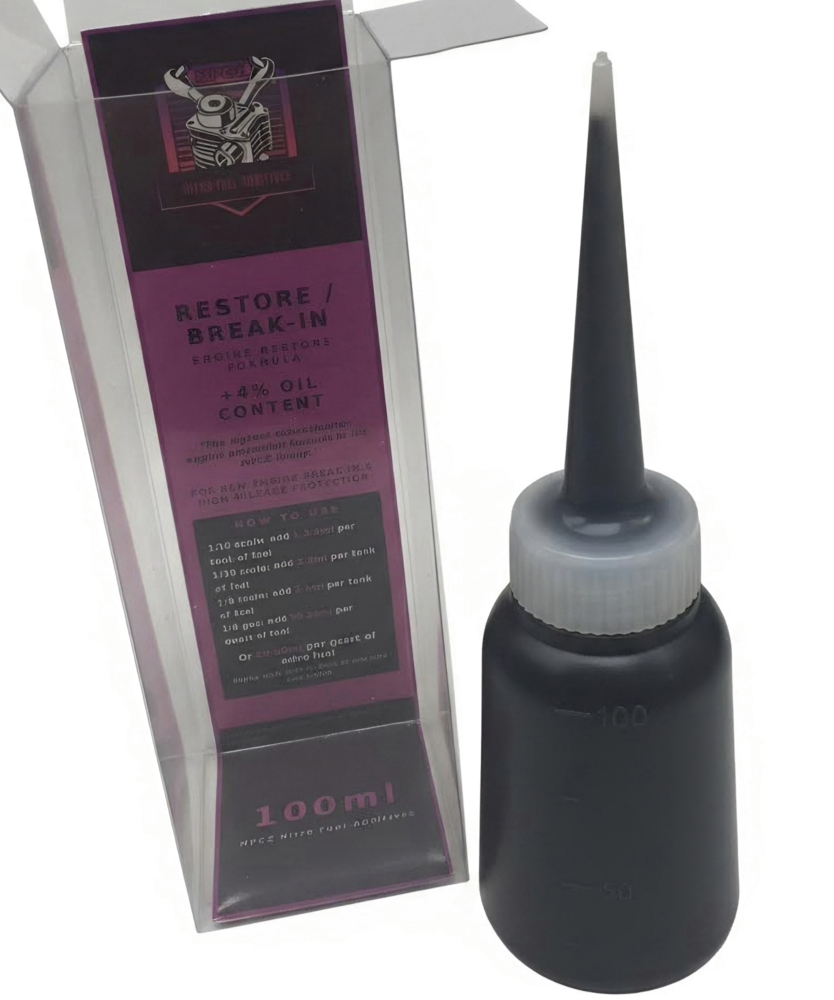

For engines that have earned their hours, and for engines just getting started. Restore fills micro-abrasions, recovers compression, and builds the protective foundation a fresh engine needs from tank one.

MPCZ Restore is formulated for engines showing signs of age: increased blow-by, erratic needle sensitivity, power loss, or high fuel consumption. Its elevated concentration of ceramic and molybdenum compounds actively fills surface micro-abrasions, restoring a tighter fit between piston and sleeve and recovering lost compression without disassembly.
High-density ceramic particles deposit into worn surface geometry, partially restoring sleeve-to-piston clearance and recovering lost compression pressure.
Molly and ceramic compounds fill hairline surface damage at the molecular level, smoothing contact surfaces and reducing friction hotspots.
As tolerances tighten, needle sensitivity stabilises, reducing the erratic tuning behaviour common in high-mileage nitro engines.
Regular Restore treatment measurably delays the point at which a rebuild becomes necessary, reducing operating cost over the engine's full lifespan.
Restore uses a higher dose rate than Daily to deliver elevated ceramic and moly concentration to worn surfaces. Start at the lower end and monitor engine behavior -- you may notice smoother running and more stable needle settings within the first treatment cycle.
| Scale | Engine (cu in) | Per Tank | Per Quart | Oil Increase | Nitro |
|---|---|---|---|---|---|
| 1/16 | .07 - .10 | 2-3 ml | 8-12 ml | +5-6% | +1% |
| 1/10 | .12 - .18 | 3-4 ml | 12-16 ml | +5-6% | +1-2% |
| 1/8 | .21 - .28 | 4-6 ml | 16-24 ml | +6-8% | +2% |
| 1/5 | .30 - .32+ | 6-8 ml | 24-32 ml | +6-8% | +2-3% |
A proper break-in is the single most important thing you can do for a new nitro engine. The goal is to slowly seat the piston and sleeve against each other under controlled heat and load. MPCZ Restore accelerates this process by depositing protective compounds into the metal surfaces from the very first tank, building a foundation that extends engine life for years.
Run without a fuel filter during break-in. Filters restrict fuel flow and can lean out the engine at exactly the moment it needs to run rich. Remove it for the entire break-in period and reinstall after the final tank.
Inspect and clean your glow plug before every break-in session. A weak or fouled plug causes inconsistent ignition which leads to uneven heat cycles and poor seating. Replace it if there is any doubt. Plugs are cheap, sleeves are not.
Start with your needle set noticeably rich. You should see a steady stream of smoke from the exhaust. A lean engine during break-in will score the sleeve. When in doubt, go richer.
Run a full tank at low-to-mid throttle, then shut down and let the engine cool completely before the next tank. These heat cycles allow the metal to expand and contract, seating the surfaces evenly with the help of the MPCZ compounds.
| Tank | Throttle | Duration | Notes |
|---|---|---|---|
| 1 | Idle only, no blips | Full tank | Rich needle, no filter, let cool fully after |
| 2 | Idle + occasional 1/4 throttle | Full tank | Check glow plug, re-confirm rich setting |
| 3 | Up to 1/2 throttle, brief bursts | Full tank | Listen for smooth, consistent exhaust note |
| 4 | Up to 3/4 throttle | Full tank | Begin leaning needle slightly if smoke excessive |
| 5–6 | Normal running, avoid WOT | Full tanks | Engine seating, re-check plug, reinstall filter after |